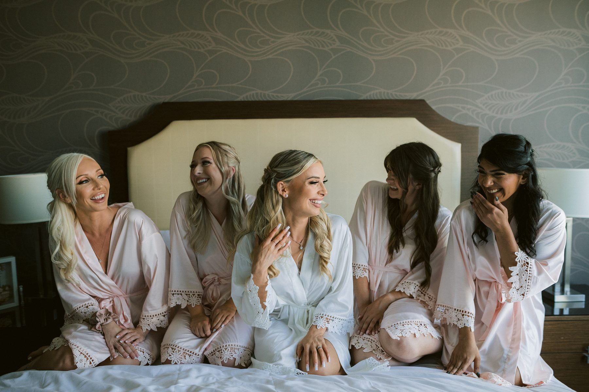
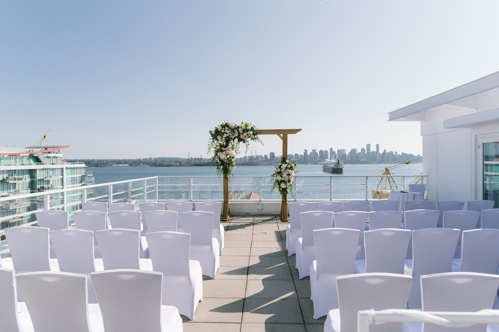
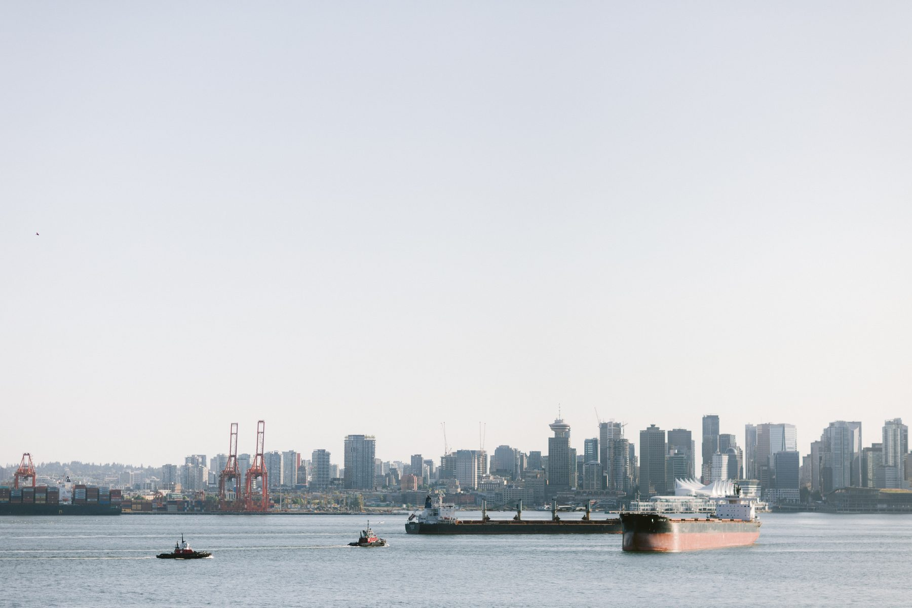
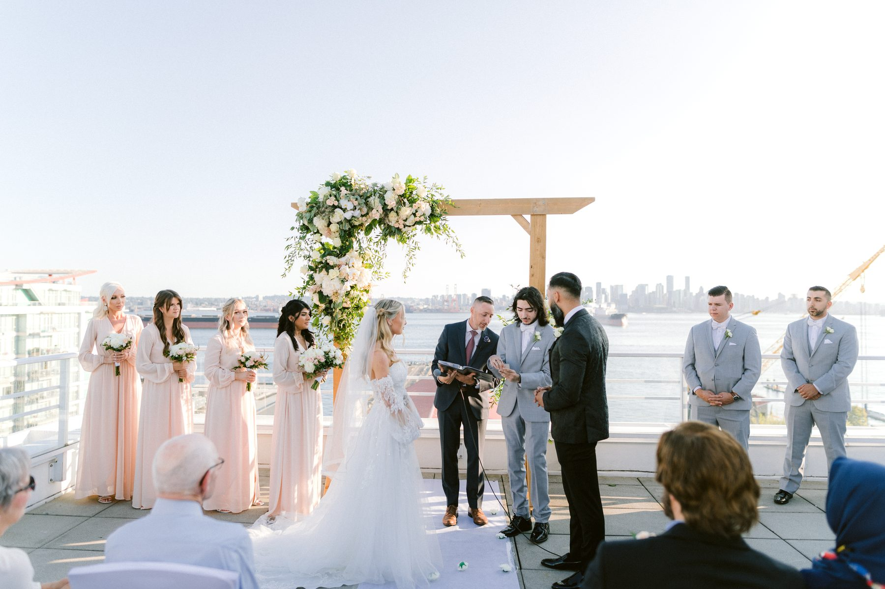
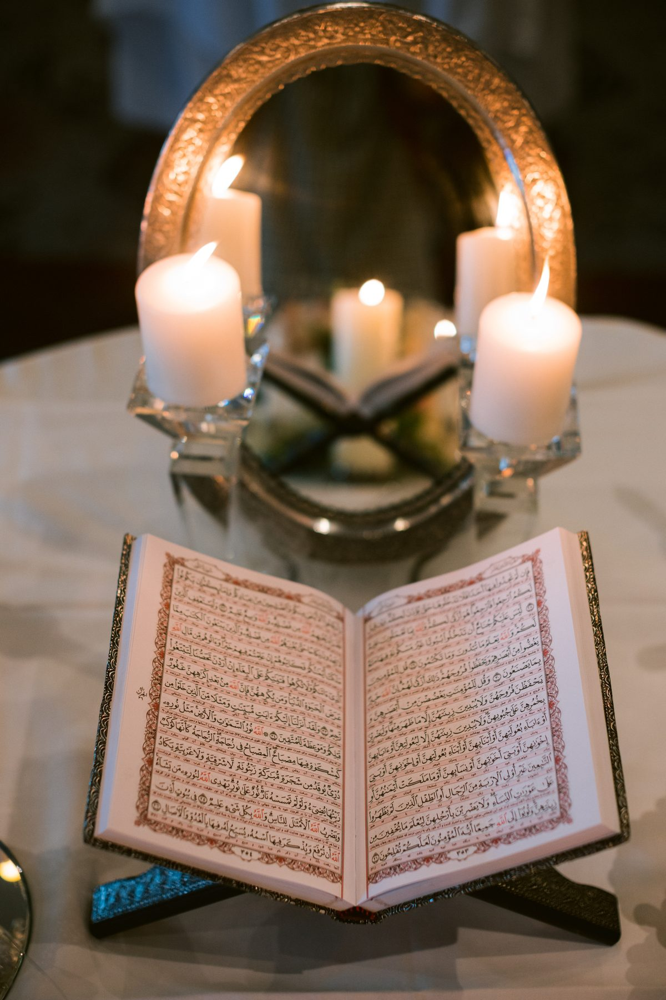
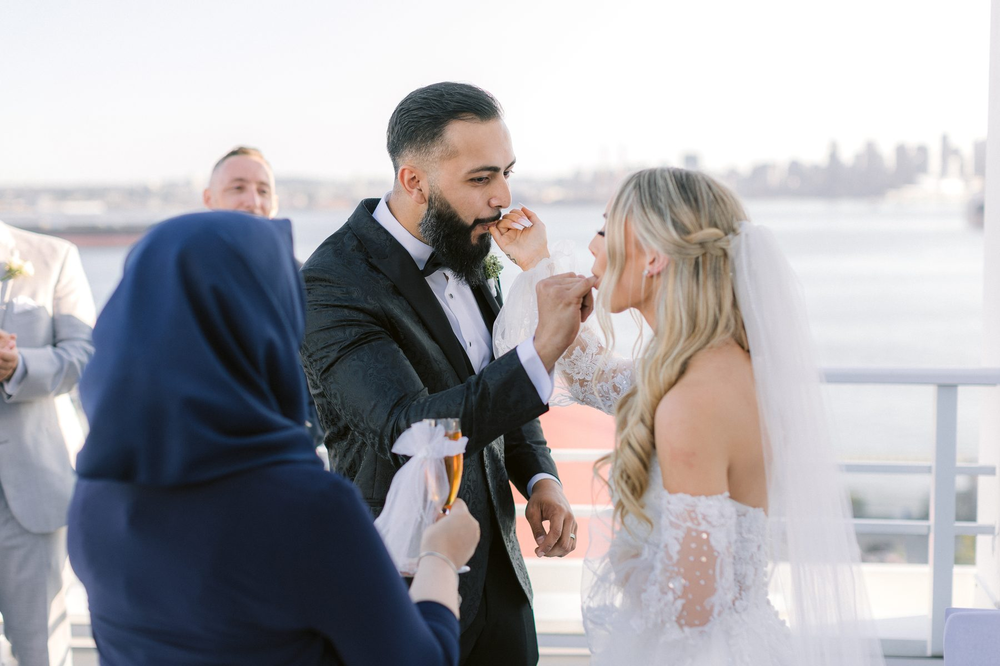
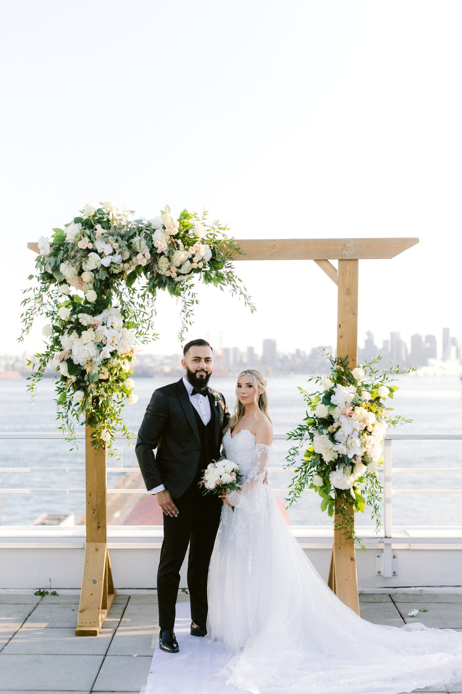
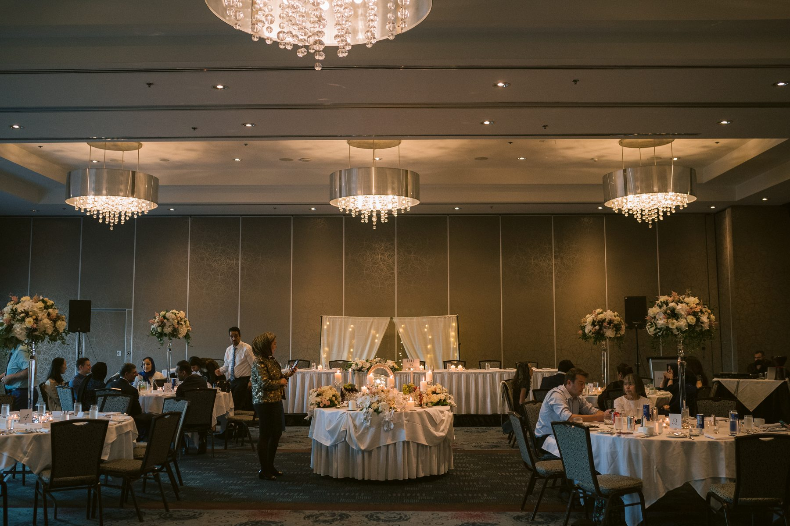

Emma and Hossein got married on a roof.
Not a rooftop bar with a rented arch shoved into a corner. An open deck on the North Vancouver waterfront, high above the street, white chairs in rows, and the entire downtown skyline sitting across the water like somebody hung it there on purpose.
Late July. Ceremony at seven. The light was still going strong at nine.
If a rooftop ceremony is on your list, here is what that day actually looked like, including the parts nobody puts in a venue brochure.
Emma got ready in a suite upstairs with her bridesmaids. Hossein got ready down the hall. The ceremony was on the roof. Dinner was in the ballroom downstairs. Nobody got in a car. Nobody sat on the Lions Gate wondering if they were going to be late to their own wedding.

I have shot weddings with three locations and a shuttle bus and they can be wonderful. But every transfer costs you thirty to forty minutes and a slice of everyone's patience. A single building hands that time back as longer getting ready coverage, an unhurried first look, and portraits that do not feel like a fire drill.
Emma's morning shows it. Robes, a bottle in a bucket, five women on a bed laughing at something I did not catch. That happens when nobody is watching a clock.
They did the first look in the suite, not on the roof.
Two reasons. The roof in the middle of a July afternoon is bright, hot, and full of staff setting chairs. And a hotel room with one big window is soft, quiet, and private in a way an open deck never will be.
I am not a first look evangelist. Plenty of couples should walk the aisle cold and feel all of it at once. But if you want your portraits finished before the ceremony so you can go straight from the vows to a drink with your friends, a first look is the only tool that gets you there.
Emma's mom cried in the hallway before the door even opened. You cannot schedule that frame.
The view is the obvious part.

The ceremony faced out across Burrard Inlet. Downtown on one side, the working harbour and a cargo ship on the other, a timber arbour with white and green florals in the middle. Zero dollars of their decor budget went toward hiding an ugly room, because there was no room.

Now the honest part, because a rooftop charges you for that view.
Wind. It is real and it does not care about your timeline. Veils lift, tall florals lean, and a long cathedral veil is a genuine gamble. Emma's held because the deck sat behind a glass railing and the evening had gone still. Have a hair plan that survives a gust.
Sun. A seven o'clock ceremony in late July put the sun low and behind the guests instead of directly in the couple's eyes. That is not luck, that is a timeline decision. Ask your photographer where the sun will be at your ceremony hour before you lock the hour in. Any of us can tell you in about a minute.

Shade. There is none. If your ceremony lands in the afternoon on an exposed deck, water for guests is not a thoughtful touch, it is a requirement.
Their ceremony table was set before anyone sat down. A mirror, candles, an open book.

I photograph a lot of blended weddings in Vancouver. What Emma and Hossein did well is that they refused to split the day into two ceremonies that ignored each other. The elements lived inside one. Guests who understood what the mirror meant got their moment. Guests who did not still watched something beautiful and asked about it over dinner.
Weave, do not stack. Unless your families genuinely need two full ceremonies back to back, one ceremony that holds both is shorter, warmer, and keeps every guest in the room with you.
The second the ceremony ended, the aisle turned into a receiving line that would not quit.

A groomsman held on to Hossein for a long ten seconds and neither of them said a word. Three minutes out of a fourteen hour day, and those are consistently the photos couples end up printing.
Which is my case for not starting cocktail hour the instant the officiant stops talking. Give the space ten unstructured minutes. It costs you nothing and it out-produces every posed group shot on your list.

Reception moved to the ballroom. Round tables, low florals so people could see each other, chandeliers, a clean white cake.

Something practical about summer receptions in Vancouver. Sunset in late July lands after nine, which means your first dance is probably happening in daylight. The room reads bright and clean instead of going orange under tungsten, and that is most of the reason these photos look the way they do.
If you want the dusk look too, ask for a ten minute step outside after dinner. On a rooftop venue that walk takes thirty seconds.
Yes, with conditions.
Take it if your guest count is under about a hundred, if you can put the ceremony inside the last two hours of daylight, and if there is a real rain plan in the same building that you would not be sad about. Skip it if you need shade, if a chunk of your guest list has mobility needs and the deck is a long haul, or if the thought of wind in your hair on camera makes you tense.
Emma and Hossein got the good version. A still evening, low sun, a skyline they did not have to build or pay for, and an elevator ride down to dinner.
That is the trade. You give up control of the weather. You get a view no florist could invent.
SimplyWed Studio is a Vancouver wedding and elopement photography studio. Send us your date through the contact page and we will map the light against your ceremony time before you sign anything.
← Back to the journal